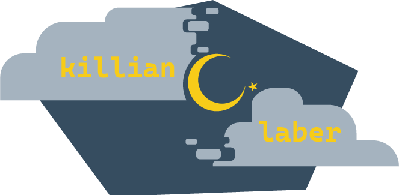
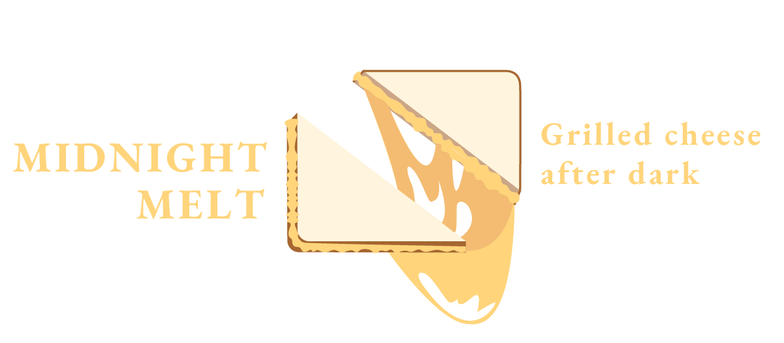
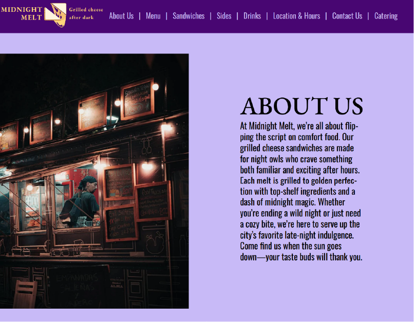

1200PX x 406PX, Interactive Design
The logo for a website designed for a fictional grilled cheese foodtruck. This food truck was specifically meant to serve food after nightfall, hense the company title “Midnight Melt”..
While the larger scope of this project was to create the design for an entire website for this business, this logo was the primary takeaway I decided to prioritize. There wasn’t much in the way of specific challenges when creating this logo, with its design mostly coming down to finding a way to indicate the company goal while standing out well against the colors of the website. Fortunately, yellow happens to be both the opposite of purple and the color of cheese.
Created in Illustrator.
